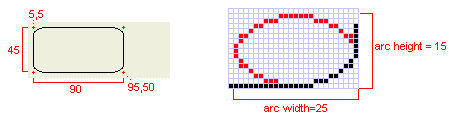
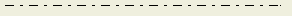
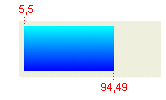
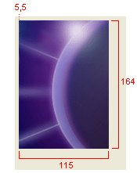

| Eclipse Corner Article |
Summary
The packageorg.eclipse.swt.graphicscontains classes that allows management of graphics resources. Graphics can be drawn on anything that implementsorg.eclipse.swt.graphics.Drawable,which includesorg.eclipse.swt.widgets.Controlandorg.eclipse.swt.graphics.Image. The classorg.eclipse.swt.graphics.GCencapsulates all of the drawing API, including how to draw lines and shapes, draw text and images and fill shapes. This article shows how to use a GC to draw onto an Image, or onto a control through its paintEvent callback. The Canvas control, specifically designed for drawing operations, has a number of constructor style bits that allow you to determine when and how painting occurs, and the article shows how to use these.By Joe Winchester, IBM
July 3, 2003
org.eclipse.swt.graphics.Drawable.
This includes a Control, an Image, a Display device or a Printer device.
The class org.eclipse.swt.graphics.GC is a graphics context that encapsulates
the drawing operations that can be performed. There are two common ways
to use a GC; either by creating one using the Drawable instance as a constructor
argument, or else using a GC that's given to you as part of a paintEvent callback.
Image image = new Image(display,"C:/devEclipse_02/eclipse/plugins/org.eclipse.platform_2.0.2/eclipse_lg.gif");
GC gc = new GC(image);
Rectangle bounds = image.getBounds();

gc.drawLine(0,0,bounds.width,bounds.height);

gc.drawLine(0,bounds.height,bounds.width,0);

gc.dispose();
image.dispose();
| Original image | Image after the GC draws across it |
 |
When creating a GC you must be responsible for disposing it  by calling its dispose() method. For more information on how to manage SWT resources
see SWT:
The Standard Widget Toolkit. A GC that's instantiated by the program
should be drawn upon and then disposed as soon as possible. This is because
each GC requires an underlying platform resource, and on some operating systems
these may be scarce, such as Windows 98 that only allows 5 GC objects to be
created before it runs out resources.
by calling its dispose() method. For more information on how to manage SWT resources
see SWT:
The Standard Widget Toolkit. A GC that's instantiated by the program
should be drawn upon and then disposed as soon as possible. This is because
each GC requires an underlying platform resource, and on some operating systems
these may be scarce, such as Windows 98 that only allows 5 GC objects to be
created before it runs out resources.
org.eclipse.swt.widgets.Control is a Drawable, so you could
draw onto a Control the same way you draw onto an Image (passing the Control as
the argument of GC to draw onto it), however unlike drawing on an image (that
permanently changes the data making up the graphic), if you use a GC to draw onto
a control you must be aware that when the operating system itself draws the control
it will overwrite your changes. The correct way to draw onto a control is
by adding a listener to its paint event. The listener class is org.eclipse.swt.events.PaintListener,
and the callback method argument is an instance of org.eclipse.swt.events.PaintEvent.
The PaintEvent includes a GC that you can send message to, that is already prepared
to draw onto the control and includes the damaged area.
The following code  adds a paint
listener to a Shell, and in the paintControl callback method
adds a paint
listener to a Shell, and in the paintControl callback method  draws a line from the origin to bottom right corner.
draws a line from the origin to bottom right corner.
Shell shell = new Shell(display);

shell.addPaintListener(new PaintListener(){
public void paintControl(PaintEvent
e){
Rectangle
clientArea = shell.getClientArea();

e.gc.drawLine(0,0,clientArea.width,clientArea.height);
}
});
shell.setSize(150,150)
Although the size of the Shell is set to (150,150), the area that can be drawn
onto is smaller. This is known as the client area, and takes into account
any trim or borders; for a Shell this includes its edges, titlebar and menubar.
To determine the clientArea of any Composite use the method getClientArea().
The application always get a paint event after the underlying OS has drawn
the control, so any drawing done to the paint event's GC will be shown on top
of the control. There are some exceptions to this, such as for a ToolBar
where on certain platforms the items are heavyweight controls that can't be
drawn on top of, however this is not considered normal behavior. For general-purpose
drawing the control org.eclipse.swt.widgets.Canvas
can be used that is optimized for graphics operations.
shell.addPaintListener(new PaintListener() {
public void paintControl(PaintEvent
e) {
Rectangle
clientArea = shell.getClientArea();
int width
= clientArea.width;
int height
= clientArea.height;

e.gc.setClipping(20,20,width - 40, height - 40);
e.gc.setBackground(display.getSystemColor(SWT.COLOR_CYAN));

e.gc.fillPolygon(new int[] {0,0,width,0,width/2,height});
}
});
This code draws a triangle on a Shell as a polygon from the  top left, top right, and center of the bottom edge. Beforehand however, the
GC is clipped with a rectangle
top left, top right, and center of the bottom edge. Beforehand however, the
GC is clipped with a rectangle  that reduces the client area with a margin of 20 pixels wide, so only the clipped
rectangle is draw.
that reduces the client area with a margin of 20 pixels wide, so only the clipped
rectangle is draw.

When a paintEvent occurs for a control the GC is always clipped to just the
area that needs repainting. For example, if another window is moved in front
of an SWT shell and then moved away, the newly revealed portion of the GUI is
marked as damaged and a paint event is queued. When the paint event occurs,
the paintControl(PaintEvent evt) method argument contains the area
of the Control that requires redrawing in its x, y, width and height fields.
The damage to the control can be complex containing multiple disjoint rectangles,
and if there is more than one damaged area of a control when the paint event
occurs the damaged areas are merged into a single rectangle representing the
union of the damaged areas. This step is performed by the underlying platform
and is designed to aid performance as multiple paint events are processed in
a single callback.
In the example above that fills a clipped triangle each time the paintControl(PaintEvent)
method is called, an optimization could be to look at the PaintEvent's area.
It maybe that the paint event doesn't even intersect the shape being drawn in
which case no drawing need occur, or if only a portion of the drawing is needs
repainting then only this is drawn. Depending on the type of drawing,
working out which portion of a GC to selectively redraw however can be more
expensive than just relying on the fact the GC is clipped, and in practice code
inside paint events often just ignores the damaged area and re-does all of the
GC drawing, relying on clipping to ensure only the damaged area is refreshed.
If a program needs to manually damage an area of a control this can be done
using Control.redraw(int x, int y, int width, int height), or Control.redraw()
to damage the entire client area. The area is marked as damaged and will
be included in the next paint event that occurs. To cause a synchronous
and immediate paint event to occur use the method Control.update()
that will force all outstanding paint requests to be processed for the control.
If there are no paint request (i.e. none of the client area is damaged),
then update() will do nothing.
Canvas
is specifically designed for graphics operations. This can be done either by using
a Canvas and adding a paint listener, or through subclassing to create a re-usable
Custom Control. Canvas has a number of style bits that can be used to affect
how painting occurs.
The default behavior for a Canvas is that before it paints itself the entire client area is filled with the current background color. This can create screen flicker, because if the paintEvent also draws onto the GC, then the user sees a flash between the original background being filled, and the drawing occurring. One way to avoid this is to use the style bit SWT.NO_BACKGROUND when creating the Canvas. This prevents the native background from being drawn, however it means the program must be responsible for drawing every pixel of the client area.
When a widget is resized a paint event occurs. This can create screen flicker as repeated repainting of the client area occurs. Flicker is also known as flash, and the style bit SWT.NO_REDRAW_RESIZE can be used to reduce this. When NO_REDRAW_RESIZE is used and the control's size is reduced no paint event is generated. This means there will be no flash as the control is not unnecessarily redrawn, and if the size is increased then the paint event's GC is clipped set to just the area that needs repainting. This is the newly revealed bottom and right edge rectangles in a shape like a backwards L.
The style bit NO-REDRAW_RESIZE works well to reduce flicker if a fixed-size
drawing is being done on the GC, and each newly exposed area generates a paint
event onto which a fresh piece of the drawing occurs. Incorrectly used
however, NO_REDRAW_RESIZE can lead to a graphic effect known as cheese.
Cheese is a general term that applies when a portion of a widget is not updated
correctly following a resize. An example of is shown below where the paint
event needs to update the entire client area, such as  fill it with an oval shape. Because no paint event occurs when the window
is reduced in size the shape is not redrawn when the size is decreased, and
when the window is made larger because the GC is clipped to just the damaged
area Cheese occurs in the newly expanded area because the previous drawing is
not erased ( as the paint event is clipped to only the newly exposed area ).
fill it with an oval shape. Because no paint event occurs when the window
is reduced in size the shape is not redrawn when the size is decreased, and
when the window is made larger because the GC is clipped to just the damaged
area Cheese occurs in the newly expanded area because the previous drawing is
not erased ( as the paint event is clipped to only the newly exposed area ).
shell.setLayout(new FillLayout());

final Canvas canvas = new Canvas(shell,SWT.NO_REDRAW_RESIZE);
canvas.addPaintListener(new PaintListener() {
public void paintControl(PaintEvent
e) {
Rectangle
clientArea = canvas.getClientArea();
e.gc.setBackground(display.getSystemColor(SWT.COLOR_CYAN));

e.gc.fillOval(0,0,clientArea.width,clientArea.height);
}
});
When the canvas size is increased the GC is clipped to just the area that needs repainting and cheese occurs.
To correct this problem in line  the style bit of SWT.NONE should be used so that the GC is not clipped on expansion,
and a paint event occurs even when the shell size is reduced so the full oval
can be repainted.
the style bit of SWT.NONE should be used so that the GC is not clipped on expansion,
and a paint event occurs even when the shell size is reduced so the full oval
can be repainted.

final Canvas canvas = new Canvas(shell,SWT.NONE);
For any SWT widget, if more than one rectangle is damaged then the platform merges these into a single damaged area that is the union of all damaged rectangles so the SWT program only processes a single paint event. The style bit NO_MERGE_PAINTS on Canvas can be used to override this behavior which means the listener will be called with a single paint event for every separate damaged rectangle.
The style bits NO_BACKGROUND, NO_REDRAW_RESIZE and NO_MERGE_PAINTS can be used
with any Composite or subclass, including Canvas, Shell, or Group. Although
this is allowed by SWT ( no exceptions will be thrown ) the Composite class's
Javadoc includes the following style bit warning "... their behavior is undefined
if they are used with subclasses of Composite other than Canvas".
The Canvas class is therefore the preferred control to use when performing
arbitrary drawing operations.
Another way to reduce flicker is to batch up the drawing that occurs on the
display by double buffering. Double buffering is a technique where the
drawing occurs onto a GC that is not the one used on the paintEvent, and the
contents are then copied across. To do this you can create an Image with the
same size as the Canvas' client area and then draw onto this with a GC(Image);
The final image is then transferred across to the paint event's GC with a single
drawImage(Image image, int x, int y) method call. When using
this technique be aware that some platforms perform native double buffering
for you already, so you may in fact be triple buffering.
GC.drawLine(int x1, int y1, int x2, int y2);GC.drawPolyline(int[] pointArray);gc.drawPolyline(new int[] { 25,5,45,45,5,45 });
GC.drawPolygon(int[] pointArray);drawPolyline(int[]) except that the last point is joined to
the first gc.drawPolygon(new int[] { 25,5,45,45,5,45 }); GC.drawRectangle(int x, int y, int width, int height);gc.drawRectangle(5,5,90,45); 
When a rectangle is drawn the bottom and right edges are drawn and it is conceptually
similar to lines being drawn between its four corners. As well as passing
the x,y,width and height as individual arguments the method is overloaded so
you can pass in the entire Rectangle - GC.drawRectangle(Rectangle);
GC.drawRoundedRectangle(int x, int y, int width, int height, int arcWidth,
int arcHeight);gc.drawRoundedRectangle(5,5,90,45,25,15); draws a rounded rectangle with
a top left corner of 5,5. The figure below shows a zoomed picture of the
bottom right corner together with an imaginary oval shown with a width of 25 and
a height of 15 to show how the rounded corner is created from 1/4 of the oval.

The implementation of the rounded rectangle could be achieved with 4 calls
to drawArc() and 4 to drawLine(). However on some platforms
such as Windows or Photon there is an optimized platform API that SWT uses.
GC.drawOval(int x, int y, int width, int height);gc.drawOval(5,5,90,45);
GC.drawArc(int x, int y, int width, int height, int startAngle, int endAngle);gc.drawArc(5,5,90,45,90,200); 
GC.setLineStyle(int style);org.eclipse.swt.SWT beginning LINE_. | SWT.LINE_SOLID | |
| SWT.LINE_DOT | |
| SWT.LINE_DASH | |
| SWT.LINE_DASHDOT |  |
| SWT.LINE_DASHDOTDOT |
GC.setLineWidth(int width);| gc.setLineWidth(2); | |
| gc.setLineWidth(4); |
Because line styles and width affect all of the draw operations, allowing you to achieve effects such as a dotted rectangle or an oval with a thick line.
gc.setLineWidth(3);
gc.drawOval(5,5,40,40);
gc.setLineWidth(1);
gc.setLineStyle(SWT.LINE_DOT);
gc.setForeground(display.getSystemColor(SWT.COLOR_BLUE));
gc.drawRectangle(60,5,60,40);

When a property such as a line width, line style or color is changed on a GC
this affects all subsequent drawing operations. The code snippet above
changes the width to 3 to draw the oval, but it then changes it back to 1 before
drawing the dotted blue rectangle. Forgetting to revert values in a GC
after modifying them is a common bug when doing SWT graphics programming.
Text
in their method name, and will handle line delimiters and tabs and are used to
implement an emulated Label. The second set of API methods have String
in their method name, and no tab expansion or carriage return processing occurs,
and are used for more sophisticated controls like the StyledText used
by the Eclipse Java editor.
GC.drawText(String text, int x, int y);Font font = new Font(display,"Arial",14,SWT.BOLD | SWT.ITALIC); // ... gc.drawText("Hello World",5,5); gc.setForeground(display.getSystemColor(SWT.COLOR_BLUE)); gc.setFont(font); gc.drawText("Hello\tThere\nWide\tWorld",5,25); // ... font.dispose();

The drawText API processes the control characters \t as tab \n as a carriage return.
GC.drawString(String text, int x, int y);Font font = new Font(display,"Arial",14,SWT.BOLD | SWT.ITALIC); // ... gc.drawString("Hello World",5,5); gc.setForeground(display.getSystemColor(SWT.COLOR_BLUE)); gc.setFont(font); gc.drawString("Hello\tThere\nWide\tWorld",5,25); // ... font.dispose()

When drawString is used, the tab and carriage return characters are not processed
The size that a String occupies when it is drawn onto a GC is based on its
contents and the font of the GC. To determine the area that a String will
occupy when it is drawn use the methods GC.stringExtent(String text), or
GC.textExtent(String text). These return a Point whose x and y are the
width and height required to render the String argument.
GC.drawText(String text, int x, int y, boolean isTransparent);Font font = new Font(display,"Arial",12,SWT.BOLD | SWT.ITALIC);
Image image = new Image(display,"C:/devEclipse_02/eclipse/plugins/org.eclipse.platform_2.0.2/eclipse_lg.gif");
GC gc = new GC(image);
gc.drawText("Hello World",5,5);
gc.setFont(font);
gc.setForeground(display.getSystemColor(SWT.COLOR_WHITE));
gc.drawText("Hello World",5,25,true);
gc.dispose();
image.dispose();
font.dispose();
GC.drawText(String text, int x, int y, int flags);gc.drawImage(image,0,0);
gc.drawText("Hello\t&There\nWide\tWorld",5,5,SWT.DRAW_TRANSPARENT);
gc.drawText("Hello\t&There\nWide\tWorld",5,25,SWT.DRAW_DELIMITER | SWT.DRAW_TAB
| SWT.DRAW_MNEMONIC );
GC.fillPolygon(int[]);gc.setBackground(display.getSystemColor(SWT.COLOR_BLUE)); gc.fillPolygon(new int[] { 25,5,45,45,5,45 }) GC.fillRectangle(int x, int y, int width, int height);gc.fillRectangle(5,5,90,45);

When a rectangle is filled, the bottom and right edges are not included.
With the code above the origin point 5,5 is included in the filled blue rectangle,
however the argument rectangle's bottom right corner of 95,50 (5+90 , 45+5)
is outside the filled area. The bottom right corner of the filled rectangle
is at 94,49. This is unlike the behavior for drawRectangle(5,5,90,45),
where the full shape is outlined so the bottom right corner is 95,50.
To illustrate this, the code below strokes a rectangle whose corners are 5,5 and 90,45 before filling it in cyan. To ensure that the filling of the rectangle doesn't overwrite its drawn outline, the origin is offset to 6,6. This moves the bottom right corner of the filled rectangle, however because it has already excluded the bottom and right edges it only needs to be inset by one to not overlap with the drawn rectangle.
gc.drawRectangle(5,5,90,45);
gc.setBackground(display.getSystemColor(SWT.COLOR_CYAN));
gc.fillRectangle(6,6,89,44);

GC.fillRoundedRectangle(int x, int y, int width, int height, int arcWidth,
int arcHeight);gc.fillRoundRectangle(5,5,90,45,25,15);
Like the GC.fillRectangle(...) method, the bottom and right edges
are excluded from the filled shape so the bottom right corner becomes 94,49
rather than 95,50.
GC.fillOval(int x, int y, int width, int height);gc.fillOval(5,5,90,45);

Like the other fill APIs, the bounding rectangle's bottom right corner is inset by one.
GC.fillArc(int x, int y, int widt4h., int height, int startAngle, int
endAngle);gc.fillArc(5,5,90,45,90,200); 
fillArc(...) method are similar to the drawArc(...),
with the offset from an East axis to begin filling and the number of degrees to
continue the arc in an anti-clockwise direction. However unlike the drawArc(...)
whose bottom right corner of the bounding rectangle is the origin offset by the
width and height, fillArc(...) follows the same pattern used by the other
fill methods where the bottom and right edge are excluded and the corner inset
by one.
GC.fillGradientRectangle(int x, int y, int width. int height, vertical
boolean);gc.setBackgrouind(display,getSystemColor(SWT.COLOR_BLUE));
gc.fillGradientRectangle(5,5,90,45,false);
This creates a horizontal gradient fill starting with the foreground color (black) on the left, and finishing with the background color (blue) on the right. As with the other fill methods, the bottom and right edges are excluded so the bottom right corner becomes inset by 1.
gc.setBackground(display.getSystemColor(SWT.COLOR_BLUE));
gc.setForeground(display.getSystemColor(SWT.COLOR_CYAN));
gc.fillGradientRectangle(5,5,90,45,true);
The vertical gradient begins at the top with the foreground color (cyan) and finishes at the bottom with the blue background color.

shell.setBackground(display.getSystemColor(SWT.COLOR_WHITE));
// ...
gc.setBackground(display.getSystemColor(SWT.COLOR_BLUE));
gc.fillRectangle(5,5,90,45);
gc.setXORMode(true);
gc.setBackground(display.getSystemColor(SWT.COLOR_WHITE));
gc.fillRectangle(20,20,50,50);
gc.setBackground(display.getSystemColor(SWT.COLOR_RED));
gc.fillOval(80,20,50,50);

The filled rectangle has a background color of white (255,255,255). When this is drawn over the blue (0,0,255) the XOR'd result is yellow (255,255,0). The portion of the rectangle drawn over the white background (255,255,255) creates an XOR result of black (0,0,0). The filled oval has a background color or red (255,0,0). When this is drawn over blue the resulting XOR value is purple (255,0,255), and when it is drawn over white the result is cyan (0,255,255);
org.eclipse.swt.graphics.Image represents a graphic that has
been prepared ready to be displayed on a device such as a Display or Printer.
The simplest way to create an image is to load it from a recognized file format.
Supported file formats are GIF, BMP (Windows format bitmap), JPG, PNG, and in
newer Eclipse releases TIFF.
Image image = new Image(display,"C:/eclipse/eclipse/plugins/org.eclipse.platform_2.0.2/eclipse_lg.gif");
GC.drawImage(Image image, int x, int y);eclipse_lg.gif is 115,164 and can be determined by
using the method image.getBounds(). When an image is drawn it will be
shown at the width and height defined by its bounds..
gc.drawImage(image,5,5);

GC.drawImage(Image image, int srcX, int srcY, int srcWidth, int srcHeight,
int dstX, int dstY, int dstWidth, int dstHeight);The src coordinates are relative to image itself, so to draw the entire image use 0,0 and width and height set to the image bound's width and height. The dst arguments represent where to draw the image on the GC, and what size to draw it at. The original image is 115 by 164, so to stretch it to twice the width and half the height use the statement
gc.drawImage(image,0,0,115,164,5,5,230,82);
Using the src coordinates allows you to specify that you want only a portion of the image drawn. For example, if you only want a section from the top right area of the image drawn, you can use src coordinates of 20,0 and a width and height of 95,82. The code below draws the destination rectangle with the same width and height (95,82) as the cropped area, however a different size could be used to stretch or shrink the image portion.
gc.drawImage(image,20,0,95,82,5,5,95,82);

Other images effects can be achieved, such as transparency, animation and alpha channel blending of images. These are outside the scope of this article, however I hope to cover these in a future article.
paintEvent callback. The API of a
GC allows lines and shapes to be drawn in its foreground color and filled in its
background color. The general purpose Canvas control is optimized to allow
drawing through its paintEvent, and it has a number of constructor style
bits to control when paint events occur. GC clipping allows you to control
the region of the GC that visible drawing occurs on, and when drawing different
line styles can be used, and text and images can be shown.
Java and all Java-based trademarks and logos are trademarks or registered trademarks of Sun Microsystems, Inc. in the United States, other countries, or both.
Other company, product, and service names may be trademarks or service marks of others.